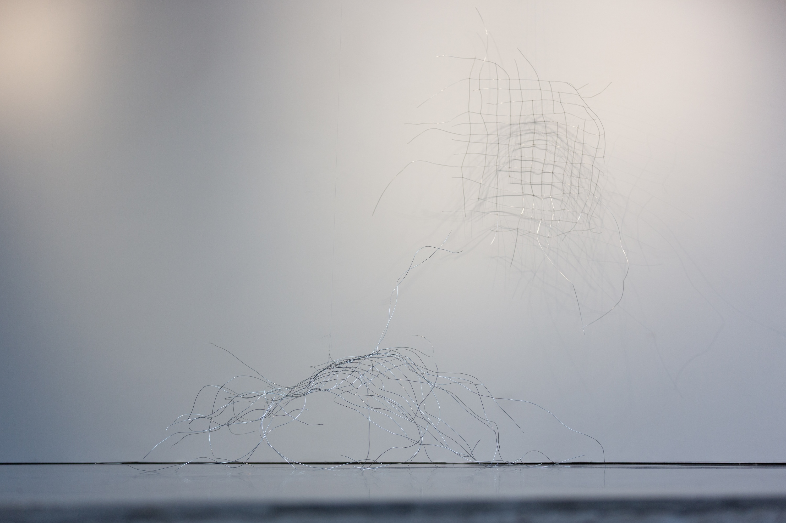

Artist based in Helsinki, Finland
1/2026 Group exhibition, Academy of Fine Arts, HELSINKI, FI
2/2026 Group exhibition, Vapaan Taiteen Tila, HELSINKI, FI
9/2026 Group exhibition, Academy of Fine Arts, HELSINKI, FI
2025 Special places, other species, found materials, Myllytori, Academy of Fine Arts, HELSINKI, FI
2025 Rusotus, duo exhibition with Maria Sorjonen, Asbestos Art Space, HELSINKI, FI
2025 Onnenkantamoinen, temporary public installation together with Piia Hiltunen & Hertta Puhakka, Hanasaari, ESPOO, FI
2024 Special places, other species, group exhibition, White studio, Academy of Fine Arts, HELSINKI, FI
2024 Out-Back, Taka/Tila, Academy of Fine Arts, HELSINKI, FI
2023 Zine, Academy of Fine Arts, HELSINKI, FI
2019 BYOB – Bring Your Own Beamer, Kaapelitehdas, HELSINKI, FI
2004 Egna bilder – fotografiska experiment, Akvaariogalleria, Wäinö Aaltosen museo, TURKU, FI
2023 – BFA, Academy of Fine Arts
2011 – 2016 BSc, Mathematics, University of Turku
2016 – 2020 Mathematics, University of Helsinki / University of Turku
